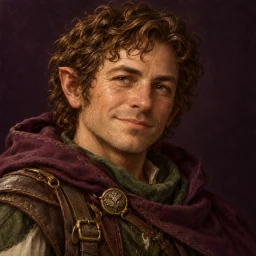
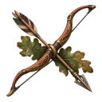
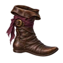

VЛЕГКОНОГИЙ ПОЛУРОСЛИКBo
Bo
Tambernack

СледопытОхотник · 5 уровеньКласс доспеха16
Пассивное внимание12
Жизненные силы41 / 49
В строю

25 фтSTR12+1
DEX16+3
CON16+3
INT10+0
WIS14+2
CHA9−1
В путиЧастые проверки
Hunter’s MarkКонцентрация
38 мин
LongbowДальний бой · 20 стрел
+61d8 + 3Дорожное снаряжение
Longbow
Натянут, тетива сухая. 20 стрел в колчане.

Лечебные травы
Бережно перевязанный дорожный запас.
Предметы и описание — содержимое образца.
ЧУЖЕЗЕМЕЦ
Там, где кончается дорога
Bo знает лесные тропы, читает следы и редко даёт обещания. Однажды данное слово он держит до конца.
Сейчас его путь ведёт к пропавшему каравану на Triboar Trail.
«Дорога всё помнит. Нужно лишь уметь слушать».
Художественный текст для визуального образца.